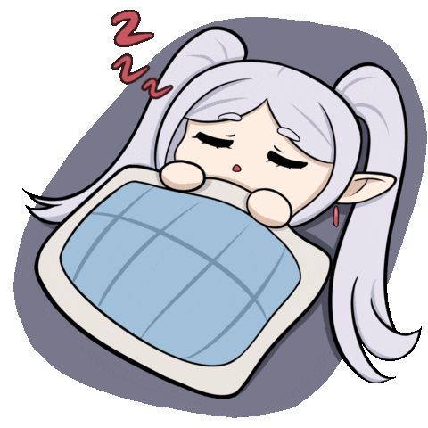
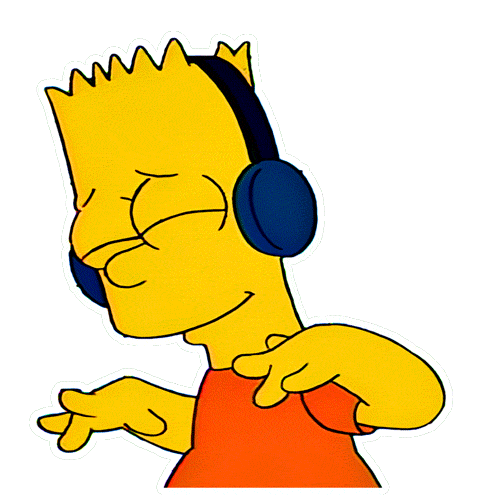
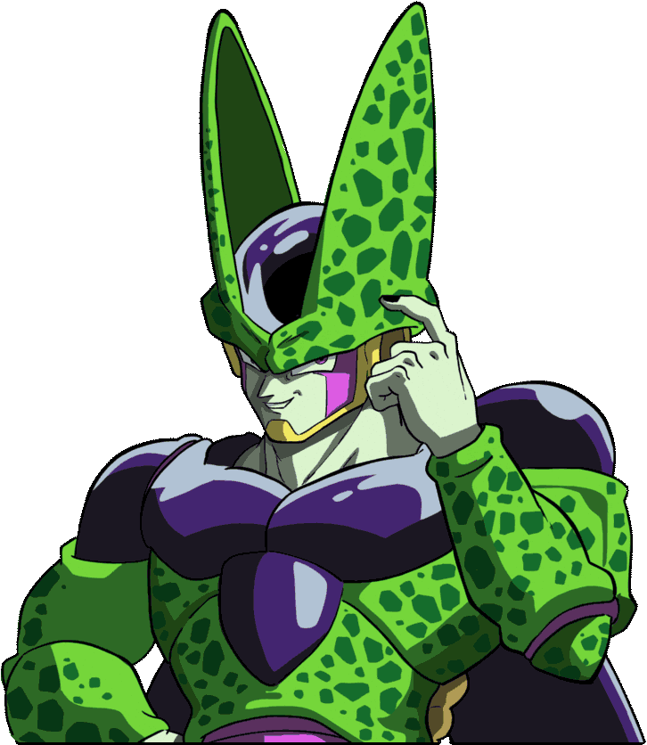

GIF Overlay - Floating GIF Display Application
Easily customize size, position, opacity, and many other useful features.
Display borderless, transparent GIFs that always stay on top of other windows.
Change size, opacity, save position automatically, and lock the window easily.
Pause or play GIFs as you want to reduce system load.
Save GIF images and easily reopen, minimize to system tray.
GIF Overlay in Action



About GIF Overlay
GIF Overlay is an application that helps you display floating GIFs on Windows screen, with many useful features to personalize your work and entertainment experience.
The app is developed to be simple, lightweight, easy to use, and supports versatile customization: resize, opacity, save position, lock window, pause/play GIF, and easy reuse.
With GIF Overlay, you can make your screen more lively and personal without affecting system performance.